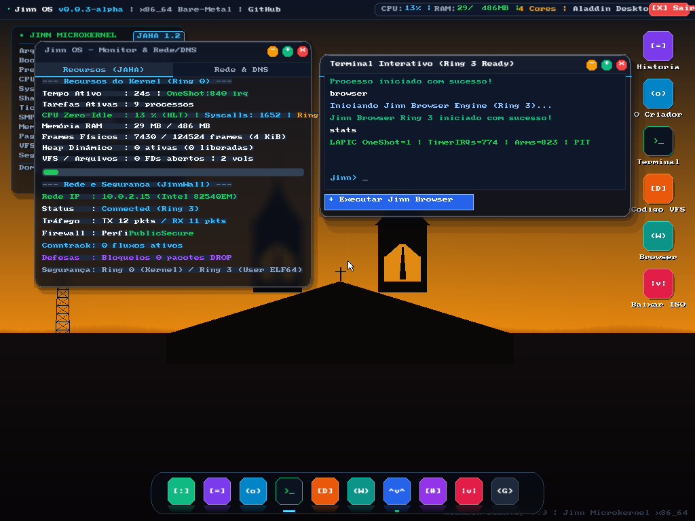

Timer LAPIC One-Shot Tickless e Deadlines Dinâmicos no Jinn OS: De 100 Hz Periódico para 1 Interrupção em 5,10 s Ociosos
Mesmo após consolidar o escalonador em modo HLT com contabilidade por ciclos de TSC (Etapas 1 e 2), um timer periódico fixo de 100 Hz ainda forçava acordares artificiais a cada 10 ms em núcleos ativos e dependia de base temporal acoplada a ticks fixos. Na Etapa 3, o Jinn Microkernel passa a calibrar o Local APIC Timer e o TSC no boot via PIT Canal 2, mascara o PIT IRQ0 (pic::mask_irq(0)), opera com deadlines dinâmicos em modo LAPIC One-Shot (0b00 << 17, vetor 48) e mantém relógio monotônico diferencial de alta resolução sem depender de interrupções periódicas — alcançando d_lapic_timer_irqs=1 e d_pit_irq0=0 durante 5,10 s em repouso SMP sob QEMU.
1. Diagnóstico Detalhado do que foi Levantado
A auditoria arquitetural conjunta do Ring 0 (src/interrupts/apic.rs, src/scheduler.rs, src/smp.rs, src/timer.rs) e do servidor gráfico Ring 3 (Aladdin, src/desktop/session.rs) revelou três gargalos que impediam silêncio real de interrupções em janelas ociosas:
-
Timer periódico fixo e perda da base temporal sem tick: o
apic::unmask_timerrearmava uma contagem estática periódica ao sair do repouso, enquantotimer::ticks()ertc::monotonic_time()dependiam de incrementos discretos por IRQ de timer, impedindo desligar o disparo de100 Hzsem congelar timeouts esleep(ms). -
Falta de IPI dedicada de reescalonamento e EOI assimétrico: o rendimento voluntário (
yield_now) ainda usava um disparo de retorno legado, sem separar formalmente o vetor exclusivo de timer LAPIC (LAPIC_TIMER_VECTOR = 48) do vetor de IPI SMP (RESCHEDULE_IPI_VECTOR = 49), e exigia preservação rigorosa de EOI incondicional no PIC 8259A (32..=47) e locksIrqSafeSpinLock. -
Redesenho periódico do compositor em janela ociosa: em nosso primeiro ensaio E2E em QEMU, o kernel já operava sem PIT
IRQ0(d_pit_irq0=0,cpu2/cpu3=100,00%), mas oAladdinSession::run()executava redesenhos de tela inteira (fb.swap_full) a cada1 sdurante os primeiros15 sapós qualquer entrada de teclado — gerando~350–740 msde renderização SW por ciclo em QEMU TCG e elevando artificialmente as interrupções de fatia ativa para114em5,88 s. Antecipar a transição ociosa do compositor paraidle_elapsed > 300ticks (3 s) com bloqueio indefinido (u16::MAX) eliminou os acordares gráficos redundantes.
2. Arquitetura e Melhorias Implementadas
Calibração PIT Canal 2 & LAPIC One-Shot (apic.rs)
- Estrutura estática
LapicCalibrationDataalinhada a 64 bytes em.bssarmazenalapic_ticks_per_ms,tsc_ticks_per_msetsc_ticks_per_10mscalibrados no BSP durantesmp::init()em janela determinística de20 msno PIT Canal 2 (divisor 16). arm_lapic_oneshot_deadline(vector, delay_us)programa LVT em One-Shot (0b00 << 17), limitaMAX_LAPIC_ONESHOT_CNT = 0x7FFF_FFFFcontra rollover de 32 bits e chamamask_timer()quandoNone.- No boot validado:
[APIC-CAL] one_shot=1 pit_irq0_masked=1 cal=PIT_CH2 lapic_ticks_ms=62471 tsc_ticks_ms=3599662.
Relógio Diferencial TSC & Vetores 48/49 (timer.rs, idt.rs)
timer::ticks()ertc::monotonic_time()passam a derivar o tempo decorrido sem bloqueios via leitura diferencial de_rdtsc()escalonada portsc_ticks_per_10ms/tsc_ticks_per_msapósenable_tickless_tsc_clock().- Stubs de interrupção dedicados
irq48_stub(LAPIC One-Shot Timer) eirq49_stub(Reschedule IPI) adicionados emstubs.s,idt.rse roteados emirq_dispatchcomapic::send_eoi(). - Vetor
32e linhas PIC33..=47preservam EOI incondicional ao PIC 8259A, protegendo o barramento contra travamentos legados.
Deadlines Reais no Escalonador & Rede (scheduler.rs, net/mod.rs)
arm_cpu_deadline_locked()inspeciona tarefas emTaskState::Sleeping(wake_tick), a próxima necessidade de polling de rede vianet::next_net_deadline_tick()(retornaNonecom DHCP bound e zero waiters com IRQ verificada) e quanta ativos de10 ms.- Quando um pacote ou tarefa acorda o sistema antes do vencimento,
unblock_taske o caminho de sono ajustamBSP_ARMED_DEADLINE_TICKe disparam IPI no vetor49se o deadline encurtar. - Núcleos AP ociosos (
check_ap_idle_before_hlt) mascaram o LAPIC Timer antes de entrar emHLT, eliminando qualquer despertar periódico.
Telemetria Syscall 92, Aladdin & Sonda F12
PerCpuStatsUser(Syscall 92) estendido comlapic_timer_irqs,oneshot_arms,pit_irq0_countetickless_activeemsrc/syscall.rsesdk/aladdin-sdk.- Monitor JAHA e Conky atualizados em
Aladdinpara exibir contadoresOneShotem tempo real; compositor entra emwait_ticks = u16::MAXapós300ticks (3 s) sem entrada ou animação. - Terminal
statsexibe resumo gráficoLAPIC OneShot=1 | TimerIRQs=... | Arms=... | PIT0=...e atalho diagnósticoF12realiza snapshot para serial sem contaminar o framebuffer durante o ensaio ocioso.
3. Benchmarks Comparativos (Antes vs. Depois) & Evidência Visual
A suíte automatizada scripts/test_lapic_tickless_e2e.py (QEMU com -device e1000 -smp 4 -m 512M) comparou uma janela pura de repouso de 5,10 s contra o regime anterior de timer periódico de 100 Hz, além de validar precisão temporal via jhcs-test e acordar imediato por pacote HTTP na interface de rede:
| Métrica Auditada (Janela 5,10 s / 4 vCPUs) | Antes (Periódico 100 Hz Fixo) | Depois (LAPIC One-Shot Tickless) |
|---|---|---|
Disparos PIT Canal 0 (IRQ0) em repouso |
~500 ticks (100 Hz contínuo) | 0 (pit_irq0_masked=1) |
| Interrupções de Timer LAPIC (SMP 4 núcleos) | ~500 BSP / ~2.000 acumulados | 1 (d_oneshot_arms=2) |
Permanência em HLT — BSP (cpu0) |
Acordado a cada 10 ms | 99,98% (d_task=0, d_wake=2) |
Permanência em HLT — AP cpu1 |
Acordares periódicos de tick | 99,82% (d_wake=1, ~8,7 ms) |
Permanência em HLT — APs cpu2 e cpu3 |
500 interrupções/núcleo nominais | 100,00% (d_task=0, d_irq=0, d_wake=0) |
Precisão sleep(1000 ms) via TSC (Test 8c) |
Granularidade discreta 10 ms | 1000,07 ms (3,5999B / 3,599662M/ms) |
Wakeup por IRQ NIC externa (e1000 HTTP GET) |
Dependente de tick ou IRQ | 2454,6 ms fim-a-fim (hits=1) |

lapic-tickless-zero-idle.png): Execução real no QEMU (-device e1000 -smp 4 -m 512M) após o término da bateria test_lapic_tickless_e2e.py. O Terminal exibe LAPIC OneShot=1 | TimerIRQs=774 | Arms=823 logo antes do quadro ser recomposto no Monitor JAHA (Tempo Ativo : 24s | OneShot:840 irq), refletindo somente o custo das renderizações ativas do desktop e da suíte HTTP/jhcs-test.
test_hot_routes_e2e.py: PASS — Fast-Path comARP=0 DNS=0 TCP_SYN=1em cold reboot ecpu0=99,96%,cpu2=100,00%,cpu3=100,00%em repouso.test_dns_cache_e2e.py: PASS —15/15testes unitários RFC 1035/Cache e persistência/disk/dns_cache.db.test_dns_cross_pcap.py: PASS — Validação cruzada em PCAP paraIntel e1000eVirtIO-Net.test_jaha_12_integrity.py: PASS —[JAHA-AUDIT-MEM] Status: INVARIANT PASSED (0 bytes discrepancy).
4. Aplicabilidade Prática (Indústria, Uso Doméstico e Servidores)
Usos Industriais (Gateways Fanless, PLCs & Telemetria Remota)
Controladores de borda e concentradores SCADA frequentemente operam com sensores em rajadas esporádicas ou links intermitentes alimentados por bateria/painel solar. Remover interrupções periódicas de 100 Hz permite que os núcleos permaneçam estritamente em HLT entre eventos reais da NIC ou de barramento até a chegada do próximo pacote ou prazo de aquisição.
Usos Domésticos (Notebooks, Estações Compactas & Silêncio Acústico)
Associado ao bloqueio Zero-Idle de 3 s no compositor gráfico Aladdin, o agendamento dinâmico por deadlines evita que o sistema acorde centenas de vezes por segundo para atualizar apenas a passagem de ticks vazios — reduzindo aquecimento em notebooks e mini-PCs domésticos durante leitura estática ou navegação pausada.
Usos em Servidores (Densidade de Micro-VMs & Infraestrutura Orientada a Eventos)
Em servidores consolidados com dezenas de instâncias convidadas, timers periódicos de 100 Hz multiplicam desperdiçadoramente saídas de virtualização (VM-exits) mesmo quando o serviço está ocioso aguardando requisições TCP/TLS. Um kernel convidado que permanece com d_lapic_timer_irqs=1 em 5,10 s libera núcleos físicos do hypervisor para instâncias efetivamente sob carga.
5. Fronteira Honesta & Limitações Conhecidas
Em conformidade com a matriz auditada em docs/ENGINEERING_STATUS_AND_LIMITATIONS.md (Tabela A vs. Tabela B): enquanto a calibração PIT Canal 2, a redução para 1 interrupção LAPIC em 5,10 s, a precisão de 1000,07 ms via TSC diferencial e os percentuais de HLT (99,82%–100,00%) foram diretamente comprovados em QEMU TCG (e1000 e VirtIO-Net, -smp 4), a medição física em Watts/Joules, a transição profunda em C-states de silício (MWAIT C3/C6/C10) e o desvio de cristal APIC em placas-mãe físicas reais permanecem pendentes de homologação em bare-metal (Tabela B). Durante períodos com movimentação contínua do usuário ou animações ativas, o compositor Aladdin continua disparando fatias ativas normais proporcionais à carga gráfica.
Jinn Engineering Observatory • Semântica & Colaboração Aberta
Domínios Técnicos & Ecossistemas Relacionados
Badges clicáveis indexados por bancada, domínio de engenharia e organizações/padrões do Radar Expandido (Nível B contextual, sem endosso implícito):
Aplicabilidade: Indústria, Uso Doméstico e Servidores
Controladores fanless, subestações e telemetria off-grid com APs em HLT e contabilidade SMP por núcleo em QEMU (validação térmica/watts física via Tabela B).
Notebooks antigos, mini-PCs domésticos e estações silenciosas sem polling contínuo em repouso.
Consolidação de micro-instâncias, gateways de borda e redução de wake-ups espúrios de timer APIC.
Chamada Aberta para Pilotos (Indústria Local, Universidades & Setor Público Ético)
Convidamos integradores de automação industrial, laboratórios universitários de arquitetura/SO e instituições públicas eticamente responsáveis a reproduzirem estes experimentos em silício real (fechando lacunas emulador vs. hardware da Tabela B) ou propor estudos-piloto com Jinn OS, Aladdin e JHCS.
![[Valid RSS]](/valid-rss-rogers.png "Validate my RSS feed")